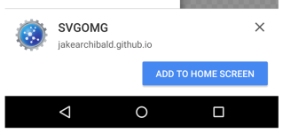

Describes the app to the browser, allowing it to provide a more native & immersive experience
{
"short_name": "IIWMD",
"name": "Is It Wednesday My Dudes?",
"description": "Answer that all important question",
"theme_color": "#D4AE9B",
"icons": [{
"src": "isitwednesday.png",
"sizes": "48x48 72x72 96x96 128x128 256x256",
"type": "image/png"
}],
"start_url": "./",
"display": "standalone"
}
Script that installs itself in the background and caches anything needed for your app to function offline
Service workers run outside of your site - essentially a proxy between your app and the Internet
Service workers must run asynchronously, ie. be non-blocking
Tell the browser about your service worker
if ('serviceWorker' in navigator) {
navigator.serviceWorker.register('/serviceWorker.js', {
scope: '/'
});
}
Cache offline files in the 'install' event
self.addEventListener('install', event => {
event.waitUntil(
caches.open('static')
.then(cache => cache.addAll([
'index.html',
'/js/main.js',
'/css/styles.css',
])
)
})
Intercept network requests and provide cached resources
self.addEventListener('fetch', event => {
if (event.request.url.startsWith(self.location.origin)) {
event.respondWith(
caches.open('static').then(cache => (
cache.match(event.request).then(response => (
response || fetch(event.request).then(response => {
cache.put(event.request, response.clone());
return response;
})
))
))
);
}
});
If the index and vital resources are cached, your site works offline
People hate slow sites - yours will work even on lie-fi
Easy access from the home screen
Users more likely to remember and re-visit
Native feel
and questions I suppose
I probably don't know though sorry@callummr